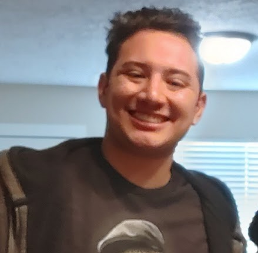
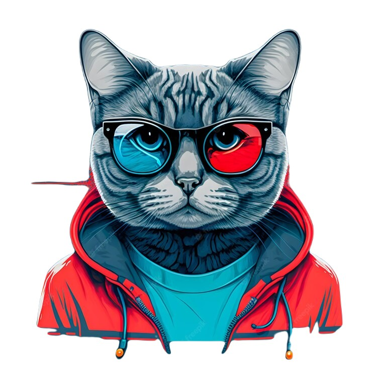

Austin


Short autobiography.
Raised in Washington, I am a part time blacksmith and part time college student, my main goal is to explore and learn about the world around me. My friends and I get together often and have many deep and entertaining discussions about life and its ironies and comedies with all but one goal in mind: to find the humor in everything. Or at the very least try.
Hobbies
School, Blacksmithing, having fun
Birthday
January, 2nd, 2003
Interests
I enjoy chemistry and other sciences. Ive always enjoyed building things, and what better thing tobuild than the building blocks of life?I also like Underwater basket weaving and Eating at hole in the wall restaurants. (ask me what that means)
What Are you Doing now?
Currently Going to College in Idaho
Why am I doin these Podcasts?
Why? Because I wanna make people laugh while also having engaging conversations with various peoples and my friends.